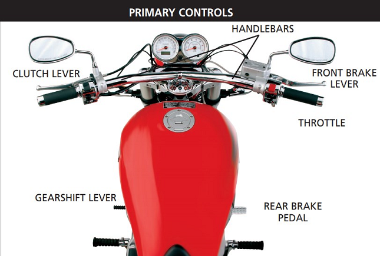

Level 0 Riders
Starting at Level 0 is intended for those who have never seen a motorcycle up close, for those that need extra clutch and balancing practice, or for those who are not sure if motorcycling is right for them. Level 0 is a great place to start, as many motorcycle schools offer a class at this level. In general, this level of class is a two to four hour, first-touch experience with a motorcycle, not designed to teach actual riding skills. You will focus on reviewing a motorcycle's primary parts and controls. You are given the opportunity to manipulate the controls while astride a motorcycle. A self-assessment component ensures you are of aware of the risks and requirements for being a good, safe and responsible rider. Training motorcycles are provided at this level of instruction.
The following are courses in Western Washington which align with Level 0:
- Washington Motorcycle Safety Training Kickstart Permit Prep Class
- Cascade Motorcycle Safety Basic Bike Bonding Rider Course

The six primary controls of a motorcycle. A skilled motorcyclist uses every single one of these.